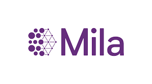
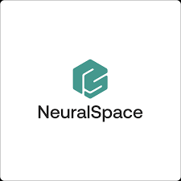
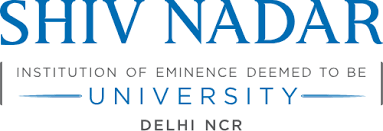

Updates
| June 2026: | Value Drifts has been accepted at TACL🎉! I will present at EMNLP in Budapest 🇭🇺 |
| Jan 2026: | I passed my comprehensive exam! I am now a PhD Candidate 🎉 |
| Dec 2025: | Gave a talk on value drifts at the Computational Linguistics in Québec Consortium . |
| Nov 2025: | Gave a talk on value drifts at University of British Columbia. |
| Oct 2025: | We released our paper, Value Drifts: Tracing Value Alignment During LLM Post-Training! Check out the paper and tweet. |
| Oct 2025: | I will be at COLM 2025 in Montreal 🇨🇦 |
| July 2025: | Our paper CulturalFrames (in collab with Google DeepMind) was accepted to EMNLP'25! Check out the paper and tweet. |
| June 2025: | I am at Nashville 🇺🇸 for CVPR 2025, co-organizing the VLMs-4-All Workshop. |
| April 2025: | I was awarded the prestigious FRQNT Doctoral Training Research Scholarship!✨ |
| April 2025: | I will be at the Simons Institute at UC Berkeley 🇺🇸 for the Safety-Guaranteed LLMs Workshop. |
| April 2025: | We released our Thoughtology paper! This was a huge and fun lab effort. Check out the paper and tweet. |
| Mar 2025: | I was awarded one of Mila’s EDI Excellence scholarships for the category - Women in AI, PhD level!✨ |
| Feb 2025: | We released our position paper, Societal Alignment Frameworks Can Improve LLM Alignment. Check out the paper and tweet. |
| Dec 2024: | I was awarded the Prof. Cho Diversity Scholarship at MILA! |
| Nov 2024: | I will be at Miami 🇺🇸 for EMNLP'24, presenting our paper on evaluating multicultural understanding of VLMs. |
| Sept 2024: | I moved to Montreal 🇨🇦! I am starting a PhD with Siva Reddy at McGill University and Mila! It's a dream come true! |
| Aug 2024: | I defended my Master's thesis and have officially graduated from UBC! I will miss Vancouver. |
| April 2024: | I will be at Barbados 🇧🇧, as an invited guest for Bellairs Invitational Workshop on Contemporary, Foreseeable and Catastrophic Risks of Large Language Models. |
| April 2024: | I was awarded the BPOC Graduate Excellence Award at UBC! |
| Feb 2024: | I was invited as a guest speaker for course CPSC 532V at UBC. I gave a lecture on exploring Cross-Cultural Phenomena in NLP. |
| Jan 2024: | Look mom and dad, I was LIVE on TV! I was interviewed by Global News and spoke about solving diversity issues in AI model. Check the live TV interview! Thanks to Vered and the UBC Media Team for this opportunity. |
| Jan 2024: | UBC News released an article about my research! |
Selected Publications
Value Drifts: Tracing Value Alignment During LLM Post-Training
, Shravan Nayak, Gaurav Kamath, Marius Mosbach, Karolina Stańczak, Vered Shwartz, Siva Reddy
TACL 2026
pdf
abstract
tweet-1
tweet-2
talk
data
code
Societal Alignment Frameworks Can Improve LLM Alignment
Karolina Stańczak, Nicholas Meade, , Hattie Zhou, Konstantin Böttinger, Jeremy Barnes, Jason Stanley, Jessica Montgomery, Richard Zemel, Nicolas Papernot, Nicolas Chapados, Denis Therien, Timothy P. Lillicrap, Ana Marasović, Sylvie Delacroix, Gillian K. Hadfield, Siva Reddy
FAccT 2026 | Bidirectional Human-AI Alignment Workshop at ICLR'25
pdf
abstract
tweet
Assessing Cultural Expectation Alignment in Text-to-Image Models and Evaluation Metrics
Shravan Nayak, , Xiaofeng Zhang, Verena Rieser, Lisa Anne Hendricks, Sjoerd van Steenkiste, Yash Goyal, Karolina Stanczak, Aishwarya Agrawal
EMNLP 2025 (Findings) | The 2025 Conference on Empirical Methods in Natural Language Processing
pdf
abstract
tweet
From Local Concepts to Universals: Evaluating Multicultural Understanding of Vision-Language Models
, Sahithya Ravi, Aditya Chinchure, Eunjeong Hwang, Vered Shwartz
EMNLP'24 (Main) | The 2024 Conference on Empirical Methods in Natural Language Processing
pdf
abstract
GD-COMET: A Geo-Diverse Commonsense Inference Model
, Vered Shwartz
EMNLP'23 (Main) | The 2023 Conference on Empirical Methods in Natural Language Processing
pdf
abstract


